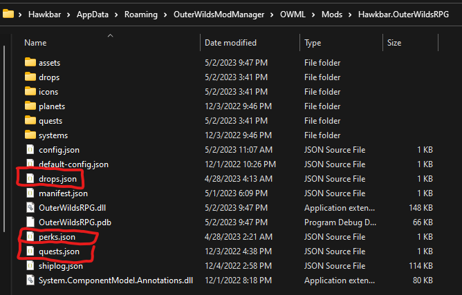
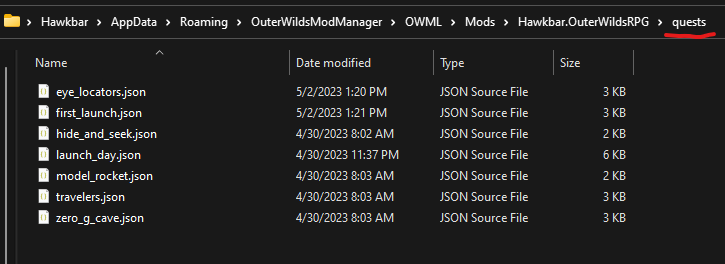

Adding Content
You can add quests, drops, shops, and perks in either of two ways: top-level JSON files, or per-item JSON files.
Top-Level JSON Files
If you have a small number of items, you can use a json file at the root of your project for each type of item (quests.json, drops.json, shops.json, or perks.json):

quests.json
{
"$schema": "https://raw.githubusercontent.com/Hawkbat/OuterWildsRPG/main/schemas/quests.schema.json",
"quests": [
{
"id": "MY_FIRST_QUEST",
"name": "My Cool Quest",
// etc.
},
{
"id": "MY_SECOND_QUEST",
"name": "My Other Cool Quest",
// etc.
}
]
}
drops.json
{
"$schema": "https://raw.githubusercontent.com/Hawkbat/OuterWildsRPG/main/schemas/drops.schema.json",
"drops": [
{
"id": "MY_FIRST_DROP",
"name": "A Very Rare Item",
// etc.
},
{
"id": "MY_SECOND_DROP",
"name": "A Less Cool Item",
// etc.
}
]
}
shops.json
{
"$schema": "https://raw.githubusercontent.com/Hawkbat/OuterWildsRPG/main/schemas/shops.schema.json",
"shops": [
{
"id": "MY_FIRST_SHOP",
"name": "Shady Merchant",
// etc.
},
{
"id": "MY_SECOND_SHOP",
"name": "Riebeck",
// etc.
}
]
}
perks.json
{
"$schema": "https://raw.githubusercontent.com/Hawkbat/OuterWildsRPG/main/schemas/perks.schema.json",
"perks": [
{
"id": "MY_FIRST_PERK",
"name": "Do Cool Stuff",
// etc.
},
{
"id": "MY_SECOND_PERK",
"name": "Do Cool Stuff Better",
// etc.
}
]
}
Per-Item JSON Files
If you have many items, or wish to organize them independently, you can create individual .json files for each one, within the appropriate subfolder (quests, drops, shops, or perks). The individual file names do not matter, but you should ensure the id property of each item is unique:

View the relevant JSON schemas for each item type:
- Quest Schema (quests folder)
- Drop Schema (drops folder)
- Shop Schema (shops folder)
- Perk Schema (perks folder)